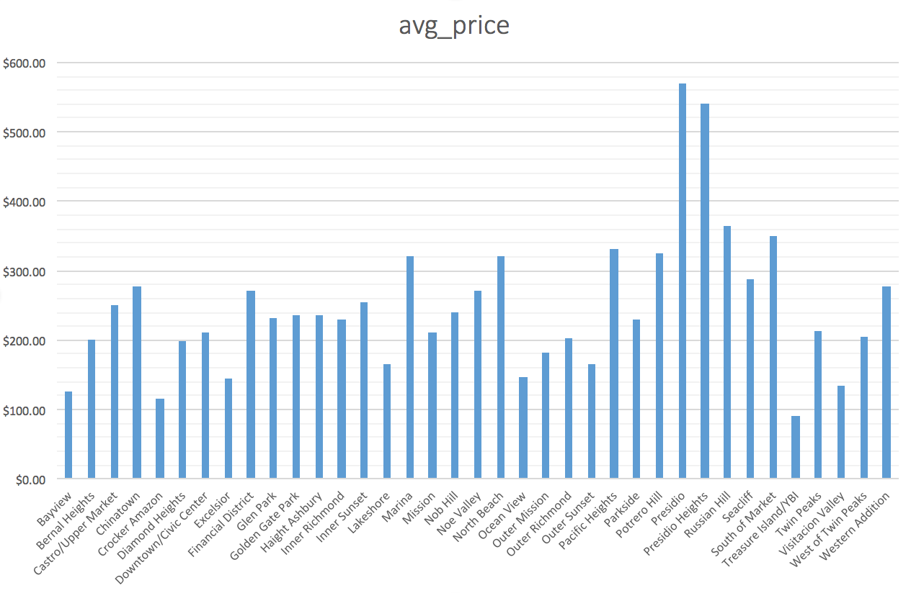

Neighbourhood vs. Average Rating:

With an average overall rating of 9.706, Diamond Heights is the neighborhood with the highest average reviews.
Neighbourhood vs. Average Rating:
With an average overall rating of 9.706, Diamond Heights is the neighborhood with the highest average reviews.
Neighbourhood vs. Price:
The wealthier parts of San Francisco tended to have higher rates for their listings, as to be expected.
Number of Reviews vs. Price:

This graph is surprising. There appears to be no correlation between the number of reviews a listing gets and its price.
Rating vs. Price:

The most expensive listings were given average ratings. It appears that when people are charged higher rates, they become more critical.